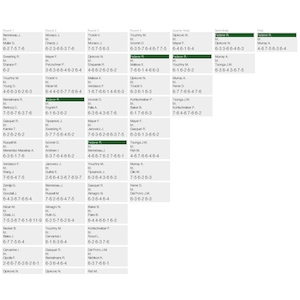
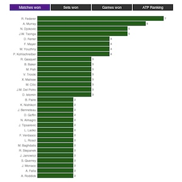
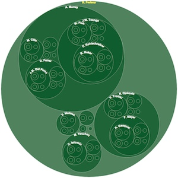
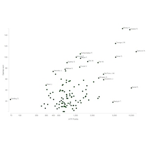

10 Views of a Single Dataset
London D3.js Meetup
June 2013
by Peter Cook / @prcweb / www.prcweb.co.uk
About me
Freelance data visualisation and web development
Brighton based
Portfolio and more at prcweb.co.uk
Background
Looking for a visualisation portfolio piece
Question: how many ways can a single dataset by visualised?
Data: Wimbledon 2012
Wimbledon 2012 Data
Comma separated value (CSV) data from tennis-data.co.uk
Single table, each row represents a single match

Each match consists of: round, player names, ATP points, games won in each set etc.
Process
- Questions & aims
- Conceptual design
- Data wrangling
- Implementation
Questions
Who won?
What were the surprises?
Who were the heroes?
Surprise defeats?
What were the interesting matches?
etc.
Exploration? Art?
No message - just allow the user to explore.
Broadly speaking...
Overviews (for exploration)
Match overview
Player overview
Hybrid?
Heroes/losers
Interesting matches
Overviews
Circular match tree

Tournament is a tree structure
Circle more space efficient than triangle
D3 partition layout
Match table
D3 + HTML/CSS (no SVG)
Surprisingly usable
Player bars
D3 + HTML/CSS (no SVG)
Transitions
Only shows top 32 due to space!
Player grid

D3 + HTML/CSS (no SVG)
Sortable
Interaction
Shows all players in one screen
Who played whom?

Graph -> force directed?
SVG: paths (arcs)
Player bubbles
(Who defeated Whom?)
Another tree structure
Node = player & children = defeated players
D3 pack layout
Heroes
Scatter-plot
Games won vs. ATP points
We expect games won to increase with ATP points
Outliers are heroes or losers
Heroes

Hero score = sum of point differences (of unexpected win)
Simple bar chart - div elements
David & Goliath

Graph structure
Matches where winner defeated player of higher rank
D3 force-directed layout
Interesting matches
Match swings

For each match, show the game differences
Sort by 'swinginess'
D3 + HTML/CSS (no SVG)
Implementation
Data wrangling
D3/HTML/SVG/CSS in fairly equal measure
Iterative design
Data wrangling
Node + underscore
5 sets of json
Other points
D3 incredible - stays out of the way
Split of effort between wrangling/design/D3/HTML/CSS/SVG
Iterative process: design - implementation
No illustrator/photoshop - pencil & paper
Setting a challenge results in creativity
Pie chart

Layouts, transitions
Custom charting

Energy data bound to SVG elements, events
World map

GeoJSON, projection, events
GOV.UK analytics

New York Times

SVG, paths, interaction
Loads of examples
Why D3?
Other libraries
D3
'Data-Driven Documents'
- Bind data to DOM elements
- Create/remove/transform DOM elements
- <p>, <td>, <rect>, <line>, <path> etc.
Why use the DOM?
- Styling (CSS)
- Interaction (events)
- Flexibility (anything that can be represented using HTML, CSS & SVG can be made with D3)
- Debugging (Chrome Developer Tools, Firebug)
- Familiarity (most web developers familiar with the DOM)
Reasons not to choose D3
- Learning curve
- Requires SVG for non-trivial graphical visualisations
Browser support
- Modern browsers
- D3 is tested against Firefox, Chrome (Chromium), Safari (WebKit), Opera and IE9
Other ‘Why D3’ resources
Overview of D3
Modules
- Core (selections, transitions, requests etc.)
- Scales (map input to output)
- SVG (generate SVG)
- Time (time formatting, math)
- Layouts (chord, cluster, force, hierarchy etc.)
- Geography (geography, projections)
- Geometry (Voronoi, quadtree, polygon, hull)
- Behaviour (drag, zoom)
Core - selections
Similar to, but not the same as, jQuery
/* jQuery */
$('td'); //Returns array (wrapped set) of elements
/* D3 */
d3.select('table'); //Returns array of arrays [[<table>]]
d3.selectAll('td'); //[[<td>, <td>, <td>, <td>]]
d3.selectAll('tr').selectAll('td'); //[[<td>, <td>], [<td>, <td>]]
d3.selectAll('td').text('Some data');
Core - selections
Data binding
/* Data */
var d = [6, 1, 4, 2, 5];
/* Selection */
var selection = d3.selectAll('li');
/* Bind data to elements */
var updateSelection = selection.data(d);
updateSelection[0][0].__data__; // 6
updateSelection.text(function(d) {return d;});
Core - other
/* Transitions */
d3.select('p').transition().style('font-size', '40px')
/* Arrays */
a = [4, 1, 2, 6, 10]
d3.extent(a) //returns [1, 10]
d3.permute(['a', 'b', 'c'], [1, 2, 0]) //returns ['b', 'c', 'a']
/* Requests - similar to jQuery.get() etc. */
/* Formatting */
var zero = d3.format("04d")
zero(2) // returns '0002'
/* Colours */
var red = d3.rgb('red')
red.r // 255
red.g // 0
var darkerRed = red.darker()
darker.r // 178
d3.select('p').style('color', darkerRed)
Scales
Scales are functions that map from an input domain to an output range
var s = d3.scale.linear().domain([0, 1]).range([-10, 10])
s(0) // -10
s(0.5) // 0
var cs = d3.scale.linear().domain([0, 1]).range(['white', 'red'])
cs(0) // '#ffffff'
cs(1) // '#ff0000'
SVG
Add SVG elements like any other element
d3.select('svg').append('circle')
.attr('cx', 40).attr('cy', 40).attr('r', 40)
.style('fill', 'red');
...or use an SVG generator to generate path data
/* Create SVG path data generator */
var line = d3.svg.line()
.x(function(d) { return d.x; })
.y(function(d) { return d.y; });
/* Data */
var d = [{x: 10, y:10}, {x:20, y:30}, {x:30, y:20}];
/* Generate path data */
line(d); // "M10,10L20,30L30,20"
line.interpolate('basis');
pathData = line(d); // "M10,10C10,10,10,10,11.666,13.333C13.333..."
/* Add to the DOM */
d3.select('svg').append('path').attr('d', pathData);
//Other generators include arc, symbol, chord, diagonal
SVG ctd.
- Axes (for generating axes in SVG)
- Controls (for drawing selection areas)
Time
/* Time scales */
first = new Date('1 Jan 2013');
last = new Date('31 Dec 2013');
var ts = d3.time.scale().domain([first, last]).range([0,1]);
ts(new Date('10 Jan 2013')); // 0.0247
/* Time intervals */
d3.time.week(new Date('4 Jan 2013')); // Sun Dec 30 2012 00:00:00
/* Counting */
d3.time.dayOfYear('10 Jan 2013'); // 9
Layouts
Example layout: Cluster

Geography
Maps geographic data (GeoJSON) to SVG path data
Many, many different projections
(Mercator, Albers, Gringorten... many more)
Geometry
- Voronoi tesselation
- Quadtree
- Hull
- Polygon
Behaviours
- Drag
- Zoom
Coding examples
Coding D3
- Selections
- Binding data
- Styling
- SVG
- Events
- Geography
D3 workshop - Brighton
THE END
Peter Cook / @prcweb / www.prcweb.co.uk